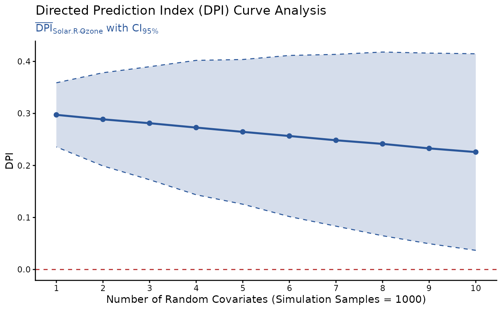

DPI curve analysis across multiple random covariates.
Usage
DPI_curve(
model,
y,
x,
data = NULL,
k.covs = 1:10,
n.sim = 1000,
alpha = 0.05,
seed = NULL,
progress,
file = NULL,
width = 6,
height = 4,
dpi = 500
)Arguments
- model
Model object (
lm).- y
Dependent (outcome) variable.
- x
Independent (predictor) variable.
- data
[Optional] Defaults to
NULL. Ifdatais specified, thenmodelwill be ignored and a linear modellm({y} ~ {x} + .)will be fitted inside. This is helpful for exploring all variables in a dataset.- k.covs
An integer vector of number of random covariates (simulating potential omitted variables) added to each simulation sample. Defaults to
1:10(producing DPI results fork.cov=1~10). For details, seeDPI().- n.sim
Number of simulation samples. Defaults to
1000.- alpha
Significance level for computing the
Strengthscore (0~1) based on p value of partial correlation betweenXandY. Defaults to0.05.Direction = R2.Y - R2.XStrength = 1 - tanh(p.beta.xy/alpha/2)
- seed
Random seed for replicable results. Defaults to
NULL.- progress
Show progress bar. Defaults to
TRUE(iflength(k.covs)>= 5).- file
File name of saved plot (
".png"or".pdf").- width, height
Width and height (in inches) of saved plot. Defaults to
6and4.- dpi
Dots per inch (figure resolution). Defaults to
500.
Examples
model = lm(Ozone ~ ., data=airquality)
DPIs = DPI_curve(model, y="Ozone", x="Solar.R", seed=1)
#> ⠙ Simulation k.covs: 1/10 ███████████████████████████████ 10% [00:00:3.5]
#> ⠹ Simulation k.covs: 2/10 ███████████████████████████████ 20% [00:00:7.2]
#> ⠸ Simulation k.covs: 3/10 ███████████████████████████████ 30% [00:00:11]
#> ⠼ Simulation k.covs: 4/10 ███████████████████████████████ 40% [00:00:14.9]
#> ⠴ Simulation k.covs: 5/10 ███████████████████████████████ 50% [00:00:19]
#> ⠦ Simulation k.covs: 6/10 ███████████████████████████████ 60% [00:00:23.2]
#> ⠧ Simulation k.covs: 7/10 ███████████████████████████████ 70% [00:00:27.7]
#> ⠇ Simulation k.covs: 8/10 ███████████████████████████████ 80% [00:00:32.3]
#> ⠏ Simulation k.covs: 9/10 ███████████████████████████████ 90% [00:00:36.9]
#> ✔ 10 * 1000 simulation samples estimated in 41.8s
#>
plot(DPIs) # ggplot object
